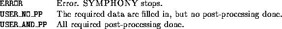

int user_set_base(void *user, int *basevarnum, int **basevars, double **lb,
double **ub, int *basecutnum, int *colgen_strat)
The user must specify the set of base variables and the number of base constraints. The base constraints themselves need not be specified since they are never stored explicitly.


The array of user indices is sorted if the user has not already done so.